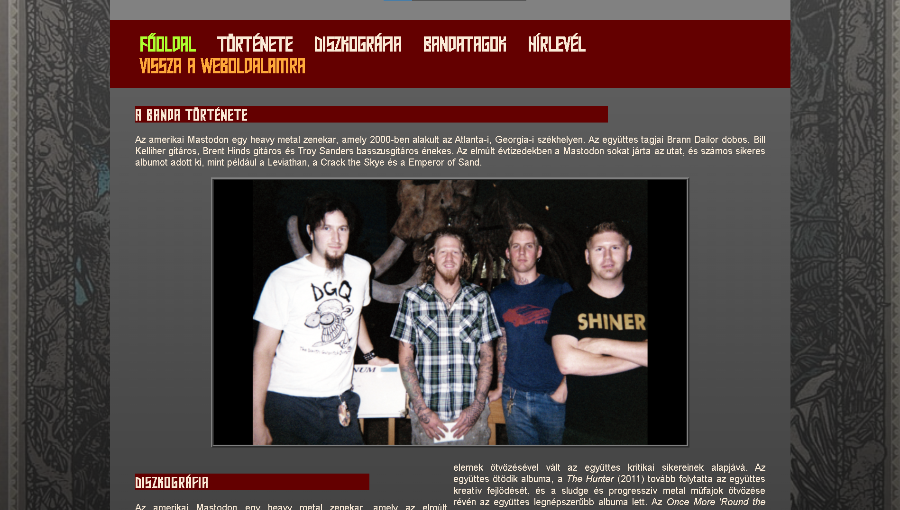
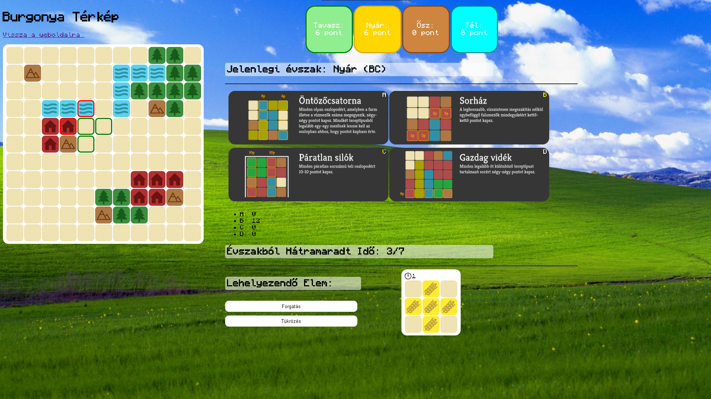
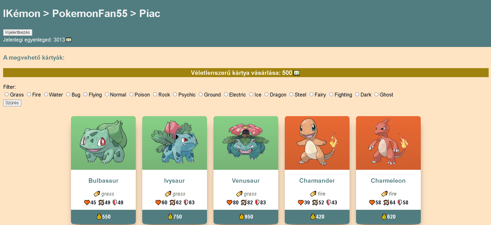
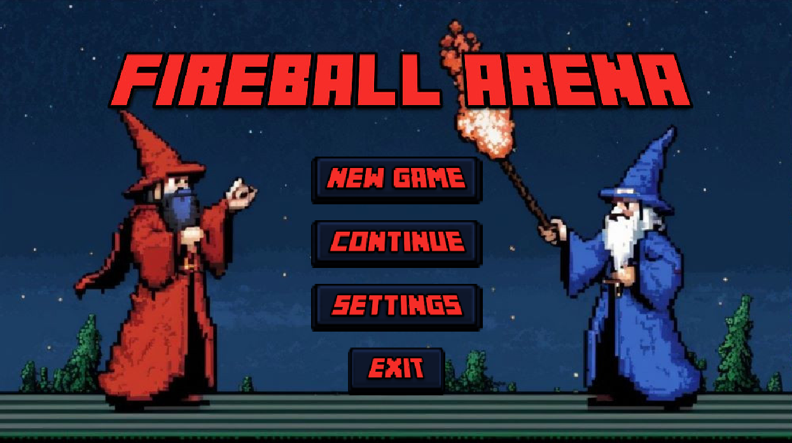
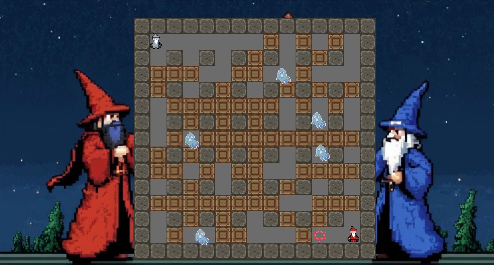

Béla Bogdándy's Website
About Me:
Hi! Welcome to my personal website. My name is Béla Bogdándy, and I am currently a third-year student at Eötvös Loránd University, Faculty of Informatics, studying Software Engineering.
MagyarulMy Projects:
Web Development Project: Fan Website
A simple HTML/CSS project where I had to create a website for one of my university classes using HTML/CSS.
This website presents the history, discography, and members of the American heavy metal band Mastodon. Visitors can also subscribe to a newsletter about the band, receive concert updates, and follow the website's news. Users can provide feedback on the website for potential improvements. (Note: feedback and updates are not guaranteed.)
(Please Note: This Project is in Hungarian)
Javascript Project: Solo Board Game
In this game,you are the royal cartographer, and you have to map out the area by the empress's decree by placing various shapes and terrain types on an 11x11 grid while scoring points based on missions. The goal is to fill the map and complete the empress's wishes as efficiently as possible within 28 turns!
(Please Note: This Project is in Hungarian)
PHP Project: ELTE IK Themed Trading Card Game, "IKémon"
The IKémon project is a PHP-based web application where users can trade Pokémon cards. An administrator in the game can create new cards and oversee user activities. Every user can buy and sell cards within the system, and the cards have various attributes and elements. The goal is for users to collect as many valuable cards as possible.
⚠️Currently unavailable to preview⚠️
Java Group Project: Bomberman
During the project, we developed a multiplayer "Bomberman"-style game in Java, where two players compete against each other on a 2D grid. Players can place bombs that explode to remove obstacles and opponents. The project was completed as a team effort, and we successfully incorporated several power-ups, such as increasing the bomb's range, as well as monsters that hinder the players. The final game also includes a local multiplayer feature.
⚠️Currently unavailable to preview⚠️